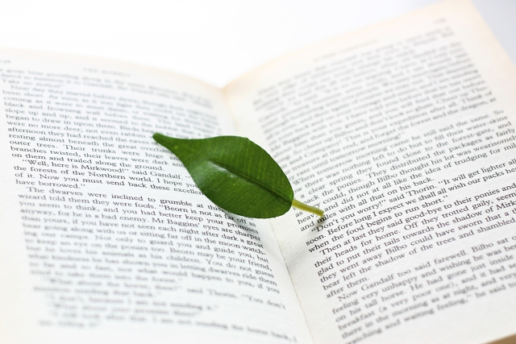

D.Hローレンスというイギリスの小説家の作品に「息子と恋人」というのがあります。
学生時代に読んだきりなので細かい部分は思い出せませんが、19世紀から20世紀ころのイギリスを舞台に労働者階級の家族を描いた物語だったと記憶しています。
これは主人公である長男の、少年期から青年期にかけての成長物語であると共に彼を溺愛する母親との葛藤も同時に描かれている点で興味深い作品でした。
父親は無教養で飲んだくれの炭鉱夫。母親は敬けんなクリスチャンで愛情深い。主人公である長男は母親に似て繊細な詩人タイプ。次男は父親似のハンサムだが父を嫌っている。
そんな人物設定だったと思います。
さてここで注目すべきは、主人公である長男と母親の強い絆についてです。
すでに夫に失望していた母親は2人の息子へ一層愛情を注ぐようになります。特に長男は信仰心の厚い真面目な母親の愛に応えようと、一生けん命努力し学業も優秀な少年へと育っていきます。母と息子は、父親に代表される無神経な外界から互いの身を守るように心を寄せ合って生きていくわけですが、やがて主人公が青年になり恋人をつくるようになった時その恋人とうまくいかないという事態になります。
読み方によるかも知れませんが、これは母親の息子への愛が強烈な磁力を発揮することによって息子が自立できなくなる過程を描いているように感じます。
この小説は作者ローレンスの自伝的作品と呼ばれていますが、私はこれを読んだときこの作品にはローレンスの母親への愛と同時に、その「愛」にがんじがらめにされた彼の反発あるいは憎しみも滲んでいると感じました。
母親の愛というものの強烈さとそれへの抵抗あるいは嫌悪が描かれているということです。
これはあくまで私の印象なので当たっているかどうかは分かりません。
ただ、一般的にいって母親の子に対する愛情は一種独特の粘着性があり、容易に子どもを手放さない執着の強さが特徴といえるでしょう。
ユング（心理学者）が母親の元型的イメージをグレートマザーと評したように、母親の愛は子の全てを包み込むと同時に飲みこんでしまう性質があるということです。
息子を抱えこむ母親
ところで私がどうして「息子と恋人」という小説を思い出したのかというと、先日2人の学校の先生とお話したことがきっかけでした。
1人は中学校の、もう1人は高校の校長先生でそれぞれの別の機会にお話したのですが、どちらからも「母親と息子の密着」の問題が持ち上がったのです。
「最近は男の子のお母さんがなかなか息子を放したがらなくて・・・」と困ったように話すのです。2人の先生から相次いでこのような話が出るのは偶然でしょうか。
偶然ではないと思います。確かにこの10数年、母親が子ども特に息子を抱えこむ傾向は強くなっていると私自身が感じているからです。たとえば部活動などで今は親がかりで面倒を見たり応援するのは普通ですし、高校生大学生になっても子どもの行事や行動を把握し何かと母親が世話を焼きます。
学校現場に話を戻すと、子ども（息子）が問題を起こして指導すると母親が出てきて「ウチの息子は悪気はなかった。それより学校の指導のほうが問題ではないか」などと抗議し、いつの間にか子どもの行状より指導方法の是非に話がスリ替わったりすることもあります。
こういうときの母親の心情は「ウチの○○ちゃんはそんな悪い子ではない」という、我が子かわいさの盲目的愛情に支配されています。
マア、この程度で済むなら「親バカ」のレベルにとどまっているといえますが、問題は先の小説のように「夫への失望」や自分の人生への「空虚な思い」などが根底にある場合です。
そうなると対象を失った愛情の矛先がすべて息子に向かうことになるからです。
息子は母親にとって異性である故に、理想の男性像を容易に投影しやすい。夫に失望していたり人生に意義を見いだせないなら尚更です。
そういえば小説「息子と恋人」というタイトルは原題がSons and Loversですが、ローレンス研究者によればこのandはイコールの意味だと言います。すなわち息子であり恋人であるということ。だから正確には「息子と恋人」ではなく「恋息子」と訳すべきだと。
作品中でも確かに母親は息子を過度に溺愛し、息子もまた母との一体化を進めます。母親のように感じ、母親の見るように世界を見るというように。こうなると息子が恋人とうまく行かないのは当然の結果です。恋人とうまくつき合うことはどこかで母を裏切ることだと感じるからです。
まずは母性の強さを自覚すること
もちろん全ての母親が息子を溺愛しているわけではありません。適度な距離と抑制のきいた穏やかな愛情で息子を育てている人が大半だと思います。
それでも世の母親に言いたいことは、自らの母性愛の強さにもっと気づいて欲しい、自覚的であって欲しいということです。
母親の子への愛は無条件であるがゆえに美しい反面、その強烈さは子どもの自立を阻む側面もあるということを知っておいて欲しいということです。
特に母性の強いタイプの人は「我が子が可愛いのは当然」とばかりに人目もはばからず（！？）に子どもを溺愛する人がいますが、バランスの欠いた過度の愛は一種のエゴイズムだと自覚したいものです。
冗談半分に言うと、我々男性（父親）からみると母親の愛情（子への）は時として氾濫する川のように途方もないものに映ります。まるで汲めども尽きない奔流のごとく湧き出るように見えます。それは生命をはぐくむ母性の豊かさである反面、もしストッパーがかからなければ子どもはその奔流の中で溺れてしまう危険性をもつものです。
そしてそのことに当の母親は案外気づいていない。
だから自覚的であって欲しいということです。
さらにもう1つ。
息子に理想の男性像を投影することのマイナス点について。
これは多くのお母さんたちが無意識にやっていることです。「息子が心優しい人になって欲しい。」「人の気持ちが分かる人になって欲しい。」たいていの母親はそう言います。そして次に望むのは「安心」と「安全」です。
だから－というかやっぱりというか－最近の若い人たち、特に男性は表面的な優しさや如才なさは身につけてはいるものの、深く他者と心を通わせることは不得手になっています。
真の人間関係を育てるためには、気持ちのスレ違いやトラブルなど困難を乗り越える必要があります。
今の若い男性たちはそのような面倒な人間関係を避け、表面的な優しさやソフトな交じりに逃げこんでいるように見えます。
また安全志向も目立ち、仕事などでも新しい分野を開拓したり未知にチャレンジすることを極度に恐れる傾向があります。これからの時代、安心確実な道などないことを考えればこういう姿勢はむしろ危険といえます。
すべてが母親のせいと言うわけではありませんが、世のお母さんたちにはこのような「現実」をぜひ知っておいて欲しいと思います。
やはり信じて手放すのが大事
ところでローレンスは「息子と恋人」を書くことで母親の呪縛を断ち切ろうとしました。あの作品はだから母への決別宣言だったのです。その後ローレンスは作風をガラリと変え「チャタレイ夫人の恋人」のように、精神より肉体を信仰より情熱を重視した作品を書き続けます。晩年彼は小説、詩、紀行文などで独自の思想を展開しますが、その思想は－あえてレッテルを貼れば－反知性主義、反キリスト教主義に満ちています。
知性重視の姿勢やキリスト教的倫理感はまさに母親を象徴する世界そのものでした。
彼は死ぬまでその「世界」と闘い続けたようです。しかし、それでもやはり彼は母親を愛していたと思います。なぜなら「息子と恋人」は彼の作品中でもっとも美しい文体で書かれているからです。いや、近代イギリス文学史上もっとも美しい小説と言えるかもしれません。（ある評家の弁）
いずれにしても母親の呪縛（愛）から逃れ自立するにはとてつもないエネルギー（代償）を払うものだということがローレンスの仕事をたどっても分かります。
最後に息子をもつお母さん方へ言いたいこと。
それは、お母さんのあふれる愛を全て息子に注ぎこむのではなく別のものに向けて欲しいということ。それは仕事かも知れないし趣味かも知れません。夫との関係修復かも知れません。今まで子どもに注いできたエネルギーを分散させて欲しいのです。自分の人生の充実のために。
特に息子が思春期になったら基本的に手放してほしいのです。
信じて手放す！これが大切です。
結局いつも同じ結論ですね。